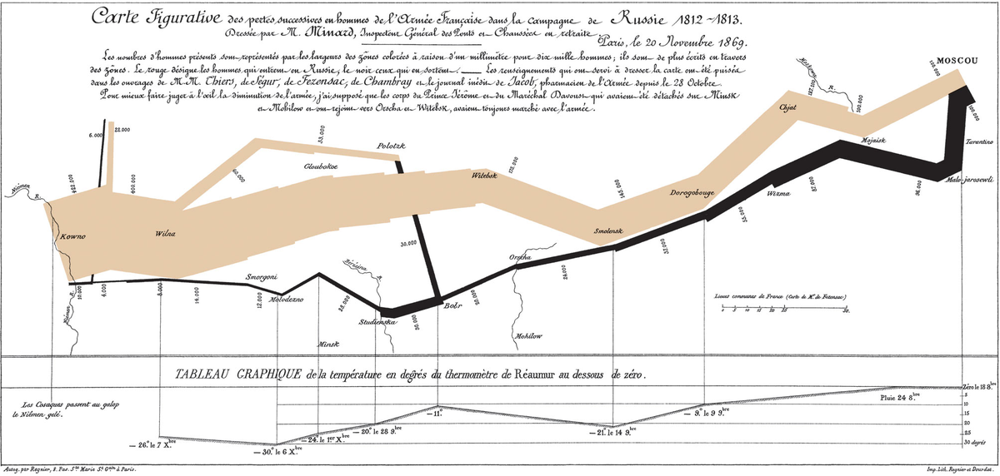
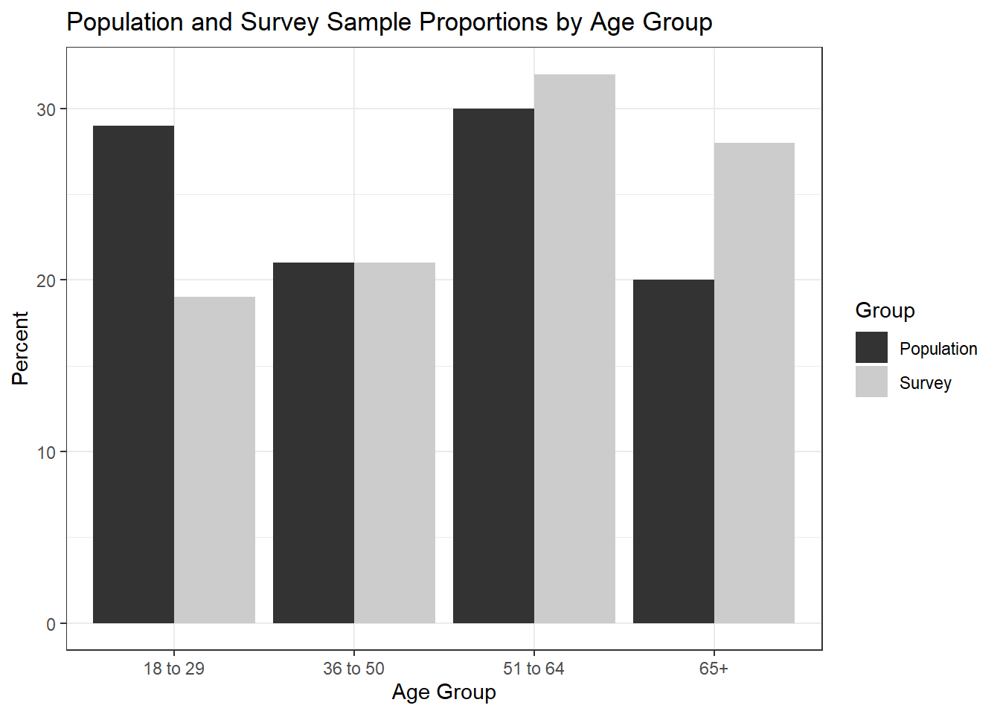
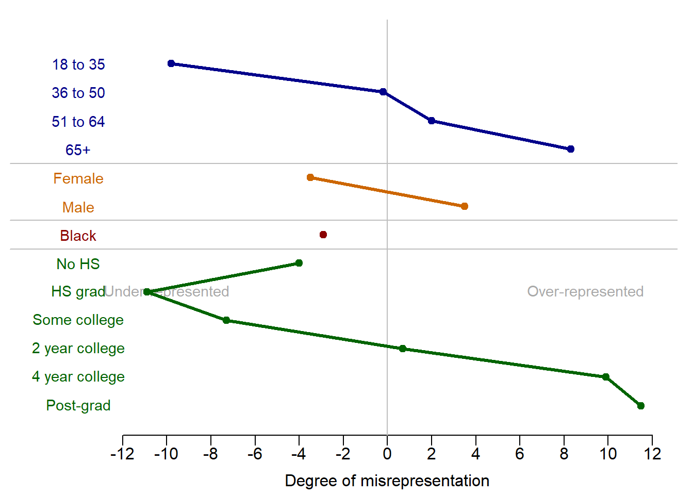
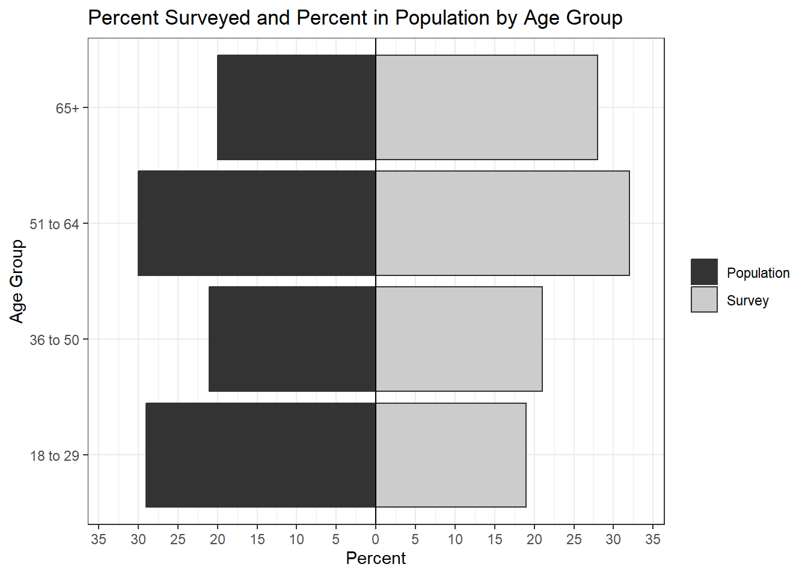
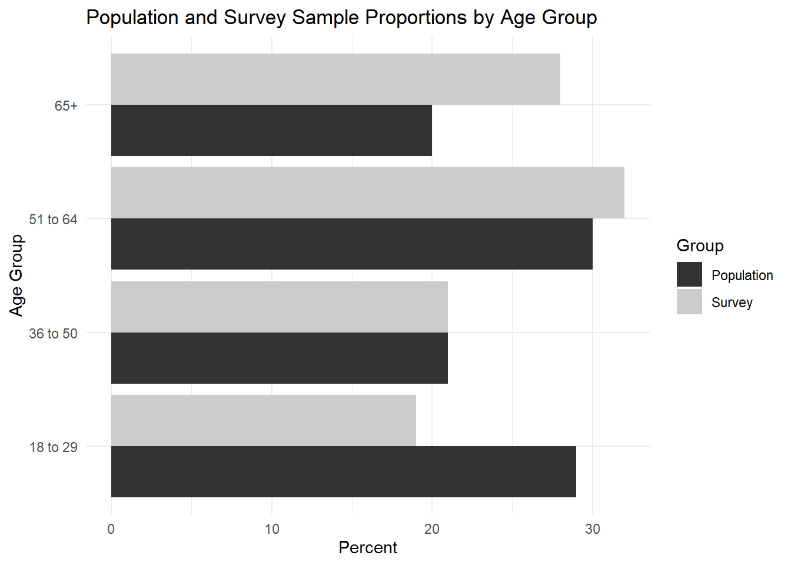

5 Lab IV: Data Visualization

5.0.1 Preparation
# Load packages used in this session of R
library(knitr)
library(tidyverse)
library(ggplot2)
opts_chunk$set(echo = TRUE)
options(digits = 2)Our goal is to visualize the difference between the population percent (popPct) and the survey percent (svyPct) for various age groups. We’ll use the data in the table below (and of course, a full viz would include more subgroups). Create designs on how to present this information. Be ready to share concept and actual viz with the entire class. You can either work individually or in small groups. Do not include code with your visualizations. Instead, create an appendix that displays each code chunk at the end of the document. Make sure there are no warnings or messages displaying too.
Use the simulated data to make at least two plots: one in Base R and one in library(ggplot). Then you can use a dataset of your choice for the last two visualizations or keep working with the fake data.
df <- data.frame("age" = c("18 to 29", "36 to 50", "51 to 64", "65+"),
"popPct" = c(29, 21, 30, 20),
"svyPct" = c(19, 21, 32, 28))
kable(df, caption = "Table: Population and survey percentages by age group")| age | popPct | svyPct |
|---|---|---|
| 18 to 29 | 29 | 19 |
| 36 to 50 | 21 | 21 |
| 51 to 64 | 30 | 32 |
| 65+ | 20 | 28 |
5.1 Base R Version
Age18to29 <- c(19, 29)
Age36to50 <- c(21,21)
Age51to64 <- c(32, 30)
Over65 <- c(28, 20)
age_groups <- cbind(Age18to29, Age36to50, Age51to64, Over65)
barplot(age_groups, beside=T, xlab="Age Group", names.arg=
c("18 - 29", "36 - 50", "51 - 64", "65+"), ylab="Percent",
main = "Percent Surveyed and Percent in Population by Age Group",
ylim = c(0,35), las=1)
legend("bottomleft",c("Surveyed %", "Population %"),
fill=c("black", "light gray"), horiz=FALSE, cex=0.73, bg="white")
5.2 Base R Version 2
dataDiff = data.frame(category = c("18 to 35", "36 to 50",
"51 to 64", "65+",
"Female", "Male",
"Black",
"No HS", "HS grad", "Some college",
"2 year college", "4 year college",
"Post-grad"))
dataDiff$diff = -1*c(28.8 - 19, 21.1-20.9, 29.8-31.8, 20.1 - 28.4,
50.8 - 47.3, 49.2 - 52.7,
11.8 - 8.9,
6.8 - 2.8, 30.6 - 19.7, 23 - 15.7, 10.6 - 11.3, 18.7 - 28.6, 10.4 - 21.9)
par(mfrow=c(1, 1), # mar(south, west, north, east)
mar=c(2., 0.25, 0.5, 0.5),
oma=c(1., 0.25, 0.5, 0.3))
plot(c(-16, 12), c(0.5, dim(dataDiff)[1]+1), type="n",
xlab = "", ylab = "", xaxt='n', yaxt='n',
bty = 'n')
axis(1, at = seq(-12, 12, by = 2),
labels = seq(-12, 12, by = 2), tick = T,
cex.axis = 1.0, mgp = c(2,.4,0))
mtext("Degree of misrepresentation",
side = 1, line = 1.75, at = 0,
cex = 1)
abline(v = 0, col = "grey")
text(9, dim(dataF)[1]+1, "Over-represented", cex = 0.9,
col = "darkgrey")
text(-10, dim(dataF)[1]+1, "Under-represented", cex = 0.9,
col = "darkgrey")
# Plot age group
points(dataDiff$diff[1:4], dim(dataDiff)[1]:(dim(dataDiff)[1]-3),
col = "darkblue", pch = 20, cex = 1.5)
lines(dataDiff$diff[1:4], dim(dataDiff)[1]:(dim(dataDiff)[1]-3),
col = "darkblue", lwd = 3)
for(aa in 1:4){
text(-14., dim(dataDiff)[1]-aa+1, dataDiff$category[aa], cex = 0.9,
col = "darkblue")
}
abline(h = dim(dataDiff)[1]-aa+0.5, col = "grey")
# Plot gender
points(dataDiff$diff[5:6], (dim(dataDiff)[1]-4):(dim(dataDiff)[1]-5),
col = "#cc6600", pch = 20, cex = 1.5)
lines(dataDiff$diff[5:6], (dim(dataDiff)[1]-4):(dim(dataDiff)[1]-5),
col = "#cc6600", lwd = 3)
for(aa in 5:6){
text(-14., dim(dataDiff)[1]-aa+1, dataDiff$category[aa], cex = 0.9,
col = "#cc6600")
}
abline(h = dim(dataDiff)[1]-aa+0.5, col = "grey")
# Plot race
points(dataDiff$diff[7], (dim(dataDiff)[1]-6):(dim(dataDiff)[1]-6),
col = "darkred", pch = 20, cex = 1.5)
lines(dataDiff$diff[7], (dim(dataDiff)[1]-6):(dim(dataDiff)[1]-6),
col = "darkred", lwd = 3)
for(aa in 7){
text(-14., dim(dataDiff)[1]-aa+1, dataDiff$category[aa], cex = 0.9,
col = "darkred")
}
abline(h = dim(dataDiff)[1]-aa+0.5, col = "grey")
# Plot education
points(dataDiff$diff[8:13], (dim(dataDiff)[1]-7):(dim(dataDiff)[1]-12),
col = "darkgreen", pch = 20, cex = 1.5)
lines(dataDiff$diff[8:13], (dim(dataDiff)[1]-7):(dim(dataDiff)[1]-12),
col = "darkgreen", lwd = 3)
for(aa in 8:13){
text(-14., dim(dataDiff)[1]-aa+1, dataDiff$category[aa], cex = 0.9,
col = "darkgreen")
}
5.3 library(ggplot) Version 1
df %>%
mutate(Population = popPct, Survey = svyPct) %>%
dplyr::select(-popPct, -svyPct) %>%
pivot_longer(-age, names_to="Group", values_to="Percent") %>%
ggplot(aes(x=age, y=Percent, fill=Group)) +
geom_bar(stat="identity", position="dodge") +
scale_fill_grey() +
theme_bw() +
labs(x = "Age Group", y = "Percent",
title = "Population and Survey Sample Proportions by Age Group")
5.4 library(ggplot) Version 2
df %>%
mutate(Population = popPct, Survey = svyPct) %>%
dplyr::select(-popPct, -svyPct) %>%
pivot_longer(-age, names_to="Group", values_to="Percent") %>%
ggplot(aes(x=age, y=Percent, fill=Group)) +
geom_bar(stat="identity", position="dodge") +
coord_flip() +
scale_fill_grey() +
theme_minimal() +
labs(x = "Age Group", y = "Percent",
title = "Population and Survey Sample Proportions by Age Group")
5.5 Alternative Plot of Your Choice
library(apyramid)
df %>%
mutate(Population = popPct, Survey = svyPct) %>%
dplyr::select(-popPct, -svyPct) %>%
pivot_longer(-age, names_to="Group", values_to="Percent") %>%
mutate(age = as.factor(age)) %>%
age_pyramid(data = ., age_group = "age", split_by = "Group",
count = "Percent", show_midpoint = FALSE) +
scale_fill_grey() +
theme_bw() +
labs(x="Age Group", y="Percent", fill=NULL,
title = "Percent Surveyed and Percent in Population by Age Group")